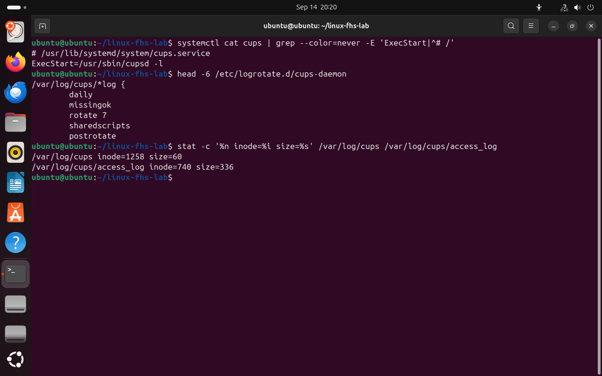
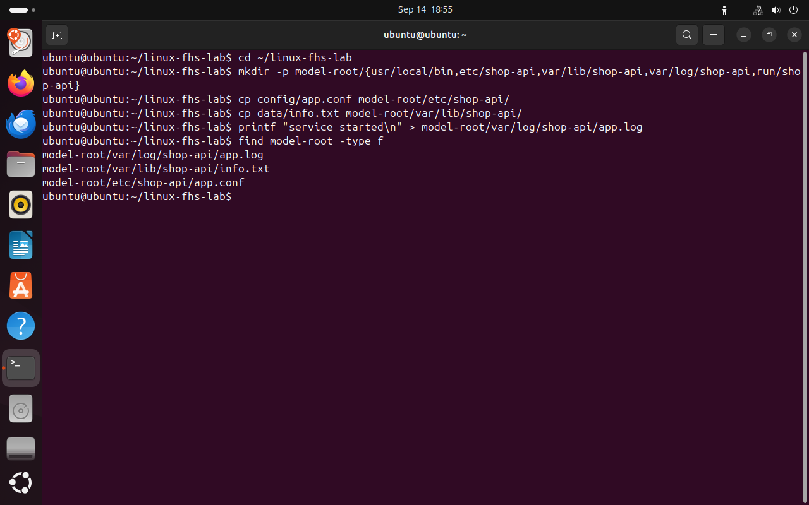
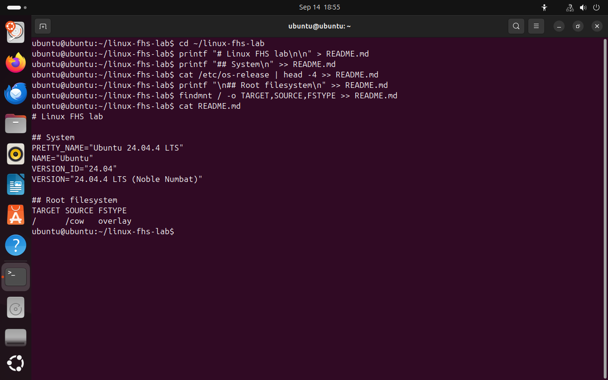

Слой 08 из 08 · Своё приложение
Размещаем своё приложение
Вопрос слояКуда положить файлы нового сервиса и как проверить, что выбор правильный?
/var/log/cups/access_log- 01Адрес
- 02Назначение
- 03Программы
- 04Срок хранения
- 05Ядро
- 06Имя и inode
- 07Монтирование
- 08Своё приложение
Мы разобрали путь полностью: где он в дереве, что в файле, кто его пишет, сколько он хранится, как устроено имя и какая файловая система за ним стоит.
Главная мысль · что уже известно
01Все файлы Linux лежат в одном дереве каталогов, и путь к любому файлу начинается с корня /. 02Каталог для файла выбирают по тому, что в нём хранится: программа, настройки или данные. 03Программы лежат в /usr, а оболочка находит их по списку каталогов из переменной PATH. 04Данные, которые меняются во время работы, раскладывают по сроку хранения: /var, /tmp и /run. 05Не каждый путь ведёт к файлу на диске: содержимое /proc, /sys и /dev выдаёт ядро. 06Имя файла записано в каталоге и указывает на inode — запись со сведениями о файле. 07Какая файловая система стоит за путём, определяет монтирование. 08…это предложение появится в конце страницы
Мы разобрали путь /var/log/cups/access_log со всех сторон. Теперь сделаем обратное: у нас есть новый сервис shop-api, и мы сами выбираем каталог для каждого его файла.
Системные каталоги /etc и /var мы не трогаем. Всю структуру соберём внутри своего рабочего каталога.
8.1 Путь access_log целиком
В таблице собрано всё, что мы узнали о пути /var/log/cups/access_log, по одной строке на слой. В правом столбце — команда, которой это можно проверить на своём компьютере.
/var/log/cups/access_log- 01Адрес
Путь читается слева направо: корень /, каталог var, в нём log, в нём cups, в нём файл access_log.
ls -l /var/log/cups - 02Назначение
access_log — журнал. Журнал меняется во время работы и относится к этому компьютеру, поэтому он лежит в /var.
man hier - 03Программы
Журнал access_log пишет программа /usr/sbin/cupsd. Её запускает systemd по полному пути.
systemctl cat cups - 04Срок хранения
Журнал должен сохраниться после перезагрузки, поэтому он в /var/log. Каждый день старая часть журнала откладывается, хранится 7 копий.
cat /etc/logrotate.d/cups-daemon - 05Ядро
access_log — обычный файл, его содержимое записано на диск. У файла /proc/uptime на диске нет ни байта.
findmnt -T /proc/uptime - 06Имя и inode
Имя access_log записано в каталоге /var/log/cups. Оно указывает на inode, где хранятся размер, владелец и права файла.
stat /var/log/cups/access_log - 07Монтирование
В Live-сессии путь лежит на корневой файловой системе overlay. В установленной Ubuntu — обычно на разделе диска с ext4.
findmnt -T /var/log/cups
Правый столбец — команда, которой вы проверите слой на своей машине.
- 1файл службы лежит в /usr/lib: путь /lib ведёт туда же
- 2systemd запускает cupsd по полному пути
- 3журналы CUPS откладываются каждый день, хранится 7 копий
- 4у access_log свой номер inode, в файле 336 байт
{kind=link}

Весь кадр ↗Проверка на настоящей системе: кто запускает службу, как хранится журнал и какой у него inode.
Те же вопросы можно задать о любом файле. Сначала: где он в дереве, что в нём хранится, кто его создаёт и как долго он нужен. Затем: лежит ли он на диске, какой у него inode и какая файловая система за ним стоит.
8.2 Файлы сервиса shop-api
У сервиса шесть файлов: программа, настройки, база данных, журнал, файл с номером запущенного процесса и промежуточный файл, который можно потерять. Выберите каталог для каждого и нажмите «Проверить».
Теперь соберём такую же структуру в каталоге model-root. Путь model-root/etc/shop-api/app.conf изображает системный /etc/shop-api/app.conf, но это обычный файл в вашем рабочем каталоге. Команда cp делает отдельную копию файла, это не жёсткая ссылка.
cd ~/linux-fhs-labmkdir -p model-root/{usr/local/bin,etc/shop-api,var/lib/shop-api,var/log/shop-api,run/shop-api}# создать пять каталоговcp config/app.conf model-root/etc/shop-api/# настройкиcp data/info.txt model-root/var/lib/shop-api/# данныеprintf "service started\n" > model-root/var/log/shop-api/app.log# журналfind model-root -type f# список файлов
- 1журнал — в var/log
- 2данные — в var/lib
- 3настройки — в etc
{kind=link}

Весь кадр ↗Структура сервиса внутри рабочего каталога. Системные /etc и /var не изменились.
Где хранить файлы сайта, которые сервис показывает посетителям?Сначала ответьте сами
/srv, например /srv/www. Многие веб-серверы по умолчанию используют /var/www. Точный путь смотрят в документации и настройках сервера.8.3 Отчёт
Скачайте шаблон отчёта в конце страницы и сохраните его как README.md в каталоге linux-fhs-lab. Снимки экрана делайте клавишей Print Screen и сохраняйте в каталог screenshots под именами из таблицы.
Под каждым снимком напишите одно-три предложения: что вы проверяли, что увидели и какой из этого вывод.
cd ~/linux-fhs-labprintf "# Linux FHS lab\n\n" > README.md# > создаёт файл заново: не запускайте, если отчёт уже заполненprintf "## System\n" >> README.md# >> дописывает в конец файлаcat /etc/os-release | head -4 >> README.mdprintf "\n## Root filesystem\n" >> README.mdfindmnt / -o TARGET,SOURCE,FSTYPE >> README.mdcat README.md
- 1
>создаёт файл заново - 2
>>дописывает в конец - 3сведения о системе в файле
- 4тип корневой файловой системы
{kind=link}

Весь кадр ↗Начало отчёта: вывод команд записан в файл.
Можно ли вставить в отчёт снимок из урока, если на нём правильный вывод?Сначала ответьте сами
Итог слоя 08
01Все файлы Linux лежат в одном дереве каталогов, и путь к любому файлу начинается с корня /. 02Каталог для файла выбирают по тому, что в нём хранится: программа, настройки или данные. 03Программы лежат в /usr, а оболочка находит их по списку каталогов из переменной PATH. 04Данные, которые меняются во время работы, раскладывают по сроку хранения: /var, /tmp и /run. 05Не каждый путь ведёт к файлу на диске: содержимое /proc, /sys и /dev выдаёт ядро. 06Имя файла записано в каталоге и указывает на inode — запись со сведениями о файле. 07Какая файловая система стоит за путём, определяет монтирование. 08По этим правилам мы размещаем файлы своего приложения и проверяем результат командами.
Главная мысль урока собрана. Каталог для файла выбирают по тому, что в нём хранится и как долго он нужен. За путём может стоять диск, память или ядро, а имя файла указывает на inode.
В отчётREADME с 13 снимками, структура shop-api и разбор шести путей из итоговой задачи.
Что сдавать
Каталог linux-fhs-lab с заполненным README.md и 13 своими снимками экрана. Если команда mount не выполнилась из-за прав, приложите сообщение об ошибке, разберите опыт по снимкам урока и напишите, что сами его не выполняли.
| Кадр | Проверка | Что объяснить |
|---|---|---|
01-root.png | Корень и навигация | Объясните /, абсолютный и относительный путь. |
02-home.png | Пользователь | Различите /, /root, ~ и скрытые имена. |
03-system.png | Настройки | Назовите дистрибутив, версию, UID, дом и оболочку. |
04-programs.png | Программы и usrmerge | Объясните порядок поиска в PATH и результат ls -ld /bin. |
05-var.png | Срок жизни данных | Различите состояние, журнал, кэш и данные текущего запуска. |
06-dev.png | Устройства | Подтвердите тип устройства и успех записи. |
07-proc.png | Живой /proc | Объясните нулевой размер и застывшую копию. |
08-sys.png | Сетевые интерфейсы | Назовите lo и остальные интерфейсы. |
09-links.png | Ссылки и inode | Почему жёсткая ссылка сохранила данные, а символическая сломалась. |
10-space.png | Место и монтирование | SOURCE, FSTYPE и свободное место; чем df отличается от du. |
11-mount-before.png | Подключение tmpfs | Куда делся before.txt. Без sudo — отказ и разбор кадров урока. |
12-mount-after.png | Отключение tmpfs | tmpfs отключена; что стало с inside.txt. |
13-model.png | Размещение shop-api | Обоснуйте каталог каждого из пяти компонентов. |
Критерии · 10 баллов
- 2 адрес и назначение: навигация, дом, /etc и учётная запись
- 2 программы и срок жизни: PATH, usrmerge, /var и /run, размещение shop-api
- 2 ядро: /dev, /proc, /sys на своих результатах
- 2 имя и inode: типы, две ссылки, опыт с rm
- 2 монтирование: findmnt, df, du и опыт с tmpfs
По каждому пункту: 2 — результат и объяснение, 1 — результат без полного объяснения, 0 — проверки нет или вывод неверен.
Итоговая задача: исправьте пути
shop-api установлен в систему как служба. Его журнал должен собираться вместе с журналами других служб, настройки — сохраняться при обновлении программы, база — после перезагрузки.
/home/admin/shop.log /usr/bin/config.json /tmp/database.db /etc/shop-api/app.conf /var/log/shop-api/access.log /var/lib/shop-api/database.db
Для каждой строки напишите: оставить путь или изменить, какой путь правильный и какой слой урока это объясняет. В настоящей системе ничего не перемещайте.
Разбор после собственного решенияСначала решите сами
Домашнее задание
Выберите каталоги для файлов службы резервного копирования backup-agent: программа, настройки, журнал, список сделанных копий и файл с номером процесса. Составьте таблицу путей и объясните, какие файлы можно потерять, а какие нельзя. Сами резервные копии храните на постоянном носителе, не в /tmp.
Проверка перед сдачей
Отмечено 0 из 5